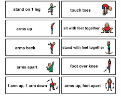

Push ups:
To do pushups, you have to get on you hands and feet and to go down, you have to put your arms down but your body must remain straight.
Stretching Positions:
Before running you have to stretch your legs to your right and left to prevent muscle tears or injury.
Running Tips:
When you're running, make sure you drink enough water and becareful to drink more than two sips of water.